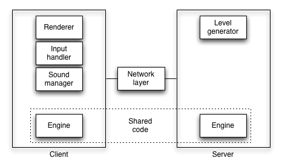

One day I had some friends over at my house showing me some cool iPad games. One of the games was Osmos, also available on OS X, developed by an indie Canadian studio called Hemisphere Games. You control a little blob that floats in 2D space, and the only thing you can do is shoot pieces of yourself in a given direction, which propels you in the opposite direction. The rules of the game are dead simple, and follow directly from conservation of mass and energy.
This game really caught my attention, because of its simplicity, depth, meditative pace and distinct lack of multiplayer support, which struck me as a potentially very interesting problem to tackle. And so, mosmos was born.
I began development with multiplayer in mind. I knew at a high level that this meant tricky synchronization issues, but didn't know much beyond that. The obvious design conclusion from a bit of research was that to have any sort of shared experience, the true game state needs to be on the server. But of course, since clients can't be perpetually synchronized to the server at 30 or 60 FPS, clients needs to have some brains too. Now that we're in the ubiquitous JavaScript era, that just means running the shared game code in node.js.
Also obvious was the need for bidirectional client-server communication, which is essential for any hopes of real time synchronization. Luckily this is provided by Web Sockets which is a thin layer above TCP, and if you prefer to hide the (not so gory) details, these can be abstracted further by the [socket.io][io] library.
Finally, I wanted the game to be written in distinct, loosely coupled components both to make the codebase more approachable for other contributors, and to make it easy to experiment with interchangeable technologies.

Mosmos uses a shared game engine that runs in both the browser and on the server. The engine is a simple state machine whose primary function is to compute the next game state as a function of time:
Game.prototype.computeState = function(delta) {
var newState = {};
// Compute a bunch of stuff based on this.state
return newState;
}
The client is composed of three main components: a renderer, input manager and sound manager. I built a very simple canvas-based renderer that draws blobs as red circles, and player blobs are green ones. My colleague Arne Roomann-Kurrik wrote an alternative three.js based renderer with some epic shaders and shadows.
The sound manager handles playback of both the background music (taken
from 8-bit Magic) and sound effects. The current implementation
uses audio tags, with two <audio> elements, one for the background
music channel, and one for the sound effects. There are known
limitations of this approach, but given the modularity of this
implementation, can be swapped out for one that uses Chrome's
Web Audio API or Firefox's Audio Data API.
Finally, the input manager handles mouse events, but can be replaced with one that uses touch instead, for a mobile version. In the mobile context, it will likely make sense to use CSS3 transformations instead of canvas, since CSS3 is hardware accelerated on iOS, while HTML5 canvas still isn't, and WebGL is not implemented.
Module loaders are a mess. There's the CommonJS spec, RequireJS library and node.js require system, none of which play nicely together. If you want to share code between client and server (one of the big wins of JS on the server) without a module loader, you can use this pattern:
(function(exports) {
var MyClass = function() { /* ... */ };
var myObject = {};
exports.MyClass = MyClass;
exports.myObject = MyObject;
})(typeof global === "undefined" ? window : exports);
This way, node.js require() will be happy, and you can also safely
include the file in a <script> tag without polluting your namespace.
Unfortunately this only works well for one module. As soon as you have multiple modules depending on each other, the difference between node require's namespacing and browser's inclusion becomes painfully apparent and requires more hacks.
Another approach is to use browserify to bundle all JS and emulate requires in the browser. This approach relies on node.js to serve the generated JS, but can be configured to pre-generate the JS that can be served statically without node. This approach introduces some overhead:
require() calls.I found out about this a bit late, and didn't have a need for multiple shared javascript files, but might be switching to this approach in a future version of mosmos.
The main problem to tackle in multiplayer game development is client synchronization. In the case of mosmos, since both the client and server know how to generate state, synchronization should just be a simple matter of keeping the clients aligned to the server.
In a networked environment, it's best to save bandwidth, which means sending as little data across the wire as rarely as possible. Of course, you want to provide a good user experience too!
My naive first stab at this problem was to run the game engine on a
fixed interval on the server (using setInterval), and use
requestAnimationFrame to trigger rendering on the client. I recognized
that there may be some desynchronization as a result of this approach,
so had provisions to update the game state periodically (via the server
sending a tick, so that the clients could take network latency into
account).
Problem: this approach led to very quick client/server desynchronization. The problem is that requestAnimationFrame calls back at unknown periods, while the server runs on a fixed clock. It's easy to see how a desynchronization might happen if the client and server run at different periods.
Note here that while the example shows a very different refresh rate, you can imagine how small differences between refresh rates would add up to lead to completely different game states for a large enough number of iterations.
So the solution to the above problem is to keep the server and client
game updates synchronized at the same rate. In other words, they should
ideally start at the same time, and then issue updates to the game
engine at a fixed tick rate. We can still keep the renderer on a
requestAnimationFrame governed callback. So the code looks something
like this:
// Update on a timer.
setInterval(function() {
game.update(new Date());
}, Game.UPDATE_INTERVAL)
// Render independently (render calls requestAnimationFrame)
game.render();
Problem: the server and client still go out of sync rather quickly due to inaccuracies of JavaScript timers.
The obvious solution is to create a more accurate timer in JavaScript. My first approach was to set up a very quickly firing timer, which would then use JavaScript dates to determine precisely how much time passed.
var e = 1; // or 0
Game.prototype.updateEvery = function(interval) {
var lastUpdate = new Date();
var ctx = this;
return setInterval(function() {
var date = new Date();
if (date - lastUpdate >= interval) {
ctx.update(date);
lastUpdate = date;
}
}, e);
};
In my testing on Chrome, the browser didn't fire more often than about 2-3ms, regardless of the value of e < 2.
Problem: this is better but is still problematic, since the interval function doesn't actually fire every ms and client/server eventually go out of sync.
Note that I found slightly better sync performance if instead of
reassigning the date with lastUpdate = date, I used
lastUpdate += interval;
So far we haven't even considered player input, which is the main thing that we want to synchronize over the network. In mosmos, there's just three kinds of input a client can do:
When a player does something, the client sends that event to the server, which posts that notification to all clients (including the originator). At this point, clients render the change.
Problem: clients get updates at different times, leading to further desynchronization.
The approach I ended up taking is similar to dead reckoning, in which the server periodically sends the world state to the client, but lets the client do intermediate computations. In the traditional game networking DR model, the client does some simple approximation of the future, but since mosmos shares the full game engine between client and server, we do much better and can afford to send updates less often.
At a certain point in time, mosmos decides that the game is over and declares a player or non-player blob the victor. The game state machine is pretty darn simple:

If our client and server are out of sync, it's possible to imagine one client's state indicating that a player is victorious, while according to the server, the game is not finished. To avoid these "false victories", mosmos doesn't let clients decide when the game is over. Instead, only the server decides, and when victory is reached, sends a message to the clients designating the victor.
There are a few things I didn't get to implement but would like to in the future!
As mentioned in the input handling section, when server updates the clients with an event like "player X shot in direction D", these updates can come at different times, leading to desynchronization. The solution I came up with was for the server to regularly send time updates to clients, and for the clients to recompute game state depending on that time. Also, all input events should be timestamped by the server to make the clients more aware of when it happened.
This approach is tricky if the client is ahead of the server, since it's
impossible to, given a game state, retroactively compute the previous
game state. As a workaround, it's possible to keep track of a game state
in the past, and use it as a keyframe to use as a starting point
for the computation. For example, if a client is at t2, but gets an
update from the server saying that player X shot in a direction d
at t1, the client can look at it's old state from t0, fast forward
to t1, insert the event, and fast forward back to t2.
Problem: if your state is already out of sync from previously accrued errors, the errors will just propagate onward. Also, the above is a rather complex approach that I never implemented.
We want to minimize the amount of data sent across the network, so it makes sense to compress what we send. The best way to do this is to employ a binary format, though unfortunately there is no binary Web Socket support yet. The next best option is to use a compressed text format. This could be implemented by writing a layer on top of socket.io which would know how to pack and unpack JSON state in a more intelligent way.